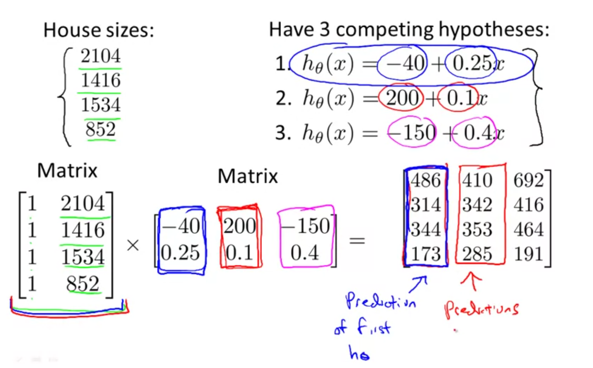

Linear algebra review
A mxn matrix is given by $$ R^{mn} = \begin{bmatrix} a&b&c\ f&n&i\ c&b&w \end{bmatrix} $$ where $m$ is number of rows and $n$ is number of columns.
A vector is a single column matrix and is given by $$ v = \begin{bmatrix} a\ b\ d\ h\ j \end{bmatrix} $$ with $5$ rows.
Notations
- $A_{ij}$ refers to element in $i$th row, $j$th column.
- In general matrixes are
1indexed - both in math and in Matlab - $v_{i}$ refers to element in $i$th row of a vector
- A vector with
nrows is considered an n-dimensional vector - Matrices are denoted in uppercase and vectors and scalars in lower case.
Matrix operations
Matrix addition and subtraction
You cannot add a scalar to a matrix. You can however add two matrices, they need to be of same dimensions. You add each element at corresponding positions.
$$ \begin{bmatrix} 3&5\ 7&8\ -9&0 \end{bmatrix} + \begin{bmatrix} 8&0\ 5&-2\ 2&1 \end{bmatrix} = \begin{bmatrix} 3+8&5+0\ 7+5&8-2\ -9+2&0+1 \end{bmatrix} $$
The same applies for subtraction.
Matrix and scalar multiplication and division
You can multiply a scalar with a matrix, there are not restrictions with respect to dimensions. You multiply or divide each element with the same scalar.
$$ 3 \times \begin{bmatrix} 3&5\ 7&8\ 9&0 \end{bmatrix} = \begin{bmatrix} 9&15\ 21&24\ 27&0 \end{bmatrix} $$
Division is similar.
Matrix and vector multiplication
$$
\begin{bmatrix} a&b&c\ f&n&i\ c&b&w \end{bmatrix}^{\rightarrow} \times \begin{bmatrix} 3\ 7\ 9 \end{bmatrix} \downarrow = \begin{bmatrix} 3a + 7b + 9c\ 3f + 7n + 9i\ 3c + 7b + 9w \end{bmatrix} $$ For optimization, you can represent linear equations as matrix operations. For instance, consider the hypothesis function $h_{\theta}x = -40 + 0.45x_{i}$. To compute the hypothesis for $n$ different values of $x_{i}$ (34,56,21,11,10), you can represent the calculation as a matrix operation:
$$ \begin{bmatrix} 1& 34\ 1& 56\ 1& 21\ 1& 11\ 1& 10 \end{bmatrix} \times \begin{bmatrix} -40\ 0.45 \end{bmatrix} = \begin{bmatrix} -24.7\ -14.8\ -30.55\ -35.5\ -35.5 \end{bmatrix} $$ Such matrix computation is way faster than a loop. This is applicable for most language including java, c++, octave, python.
Matrix x matrix multiplication
To multiply two matrices, the number of columns of first should match number of row of second => (mxn x nxp = mxp matrix).
$$ \begin{bmatrix} a&b&c\ f&n&i\ c&b&w \end{bmatrix}^{\rightarrow}{3\times3} \times \begin{bmatrix} 3&1\ 7&2\ 9&3 \end{bmatrix} \downarrow = \begin{bmatrix} (3a + 7b + 9c)&(1a + 2b+3c)\ (3f + 7n + 9i)&(1f+2n+3i)\ (3c + 7b + 9w)&(1c+2b+3w) \end{bmatrix}_{3\times2} $$
Extending the former example, suppose you want to calculate the prediction for 3 different hypothesis functions, you can represent that problem as a matrix x matrix multiplication:

Representing these as matrix operations allows programming languages to compute them in parallel, allowing for great speedups.
Properties of matrix multiplications
- Matrices are not commutative: $A\times B \ne B\times A$
- Matrices are associative: $(A \times B) \times C = A \times (B \times C)$
- Identity matrix is a matrix made of ones for diagonals of same dimension such that $A \times I = I \times A = A$
- Identity matrix is always a square matrix.
Matrix inverse
A matrix is said to be the inverse of another matrix, if you multiply that with the matrix, you get an identity matrix. $A \times A^{-1} = I$.
Only certain square matrices have inverses. We typically compute inverse using software.
Matrix transpose
Transpose of a matrix can be created by flipping the rows and columns. For a matrix $A$, matrix $B$ is said to be its transpose $A^{T} = B$ if $B_{ij} = A_{ji}$. In other words, $A_{ij} = A^T_{ji}$.